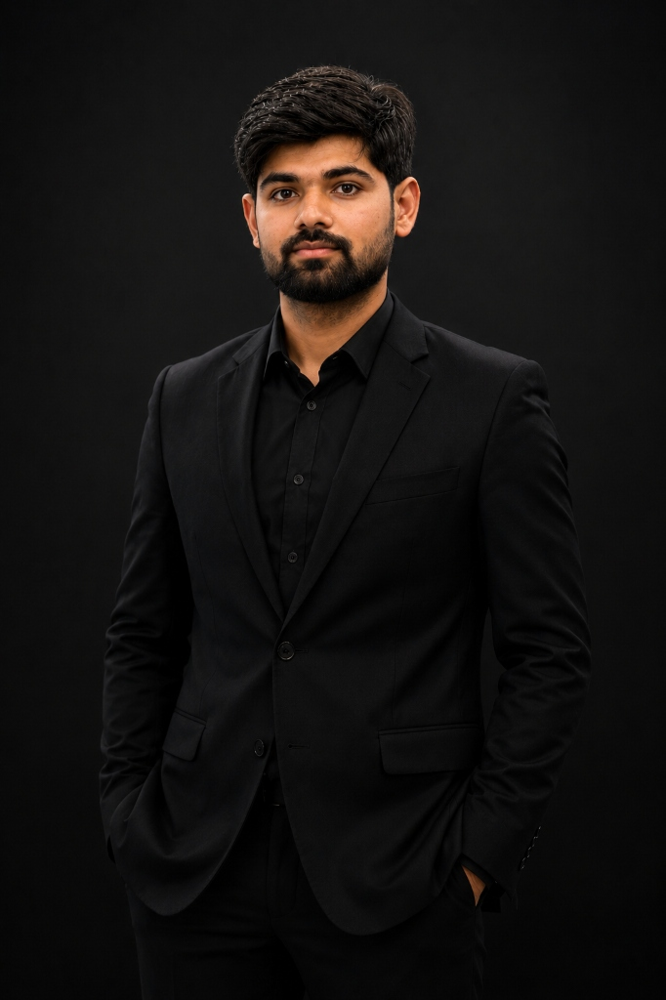

|
MSc Scholar — Hydraulic Engineering | Tianjin University, China
Civil & Hydraulics Engineer focused on the safety and structural durability of port, coastal, and offshore hydraulic structures. Re-engineering resilient water infrastructure through advanced numerical simulations.

About Me
Hello! I am Muhammad Ali, a Civil Engineering Graduate from UET Taxila, current MSc Scholar in Hydraulic Engineering at Tianjin University, China, and a selected CSC Scholar.
My primary specialization is in water resource engineering, where I carry out advanced research on the safety and durability of port and offshore structures. Seeking to build on my experience with computational modeling, I am actively seeking PhD opportunities and doctoral placements.
Key Competencies
Research Focus
Thesis Research
Sep 2025 – Jun 2026
Experience
Education
Specialization: Hydraulic Engineering
Selected Chinese Government Scholarship (CSC) recipient. Pursuing advanced scientific coursework and research on the safety, durability, and service-life prediction of marine and hydraulic systems.
CGPA: 3.25 / 4.00
Key Coursework: Hydraulics, Fluid Mechanics, Structural Engineering, Geotechnical Engineering, Construction Materials, Project Management.
Marks: 997 / 1100
Secured 1st Position in the Institution
Marks: 980 / 1100
Secured 1st Position in the Institution
Toolkit
Projects
Scholarships
Leadership
Collaborations
Open to academic collaborations regarding PhD positions, collaborative research in offshore and marine structures durability, and scientific inquiries. Let's design resilient water resource infrastructures.